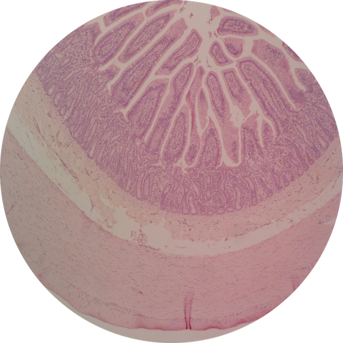

UNLV Histology
BIOL468 Companion Website
- Lab 1: Epithelial Tissue
- Lab 2: Connective Tissue
- Lab 3: Skeletal System
- Lab 4: Muscular System
- Lab 5: Integumentary System
- Lab 6: Nervous System
- Lab 7: Special Senses
- Lab 8: Endocrinology
- Lab 9: Blood & Bone Marrow
- Lab 10: Cardiovascular System
- Lab 11: Lymphatic System
- Lab 12: Respiratory System
- Lab 13: Digestive System
- Lab 14: Urinary System
- Lab 15: Male Reproductive
- Lab 16: Female Reproductive
- Lab 17: Embryology

Lab 13: Digestive System
Lab Notebook Questions
Available starting:
_IF_SHOWING_ERROR_DATE_NOT_SET_CORRECTLY_VIA_JS_TO_HTML
Practice Questions
Question 1
What organ is this? What specific portion?

Show Answer
Jejunum of the Small Intestine
Question 2
In this higher magnification view of Question 1, what structure is the pointer at?
Show Answer
Intestinal Crypt of Lieberkühn (aka "Intestinal Gland")
© UNLV School of Life Sciences